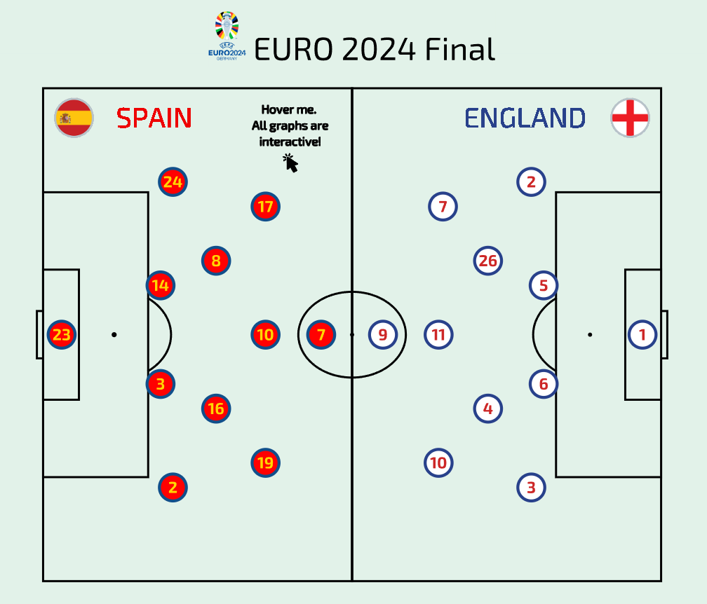
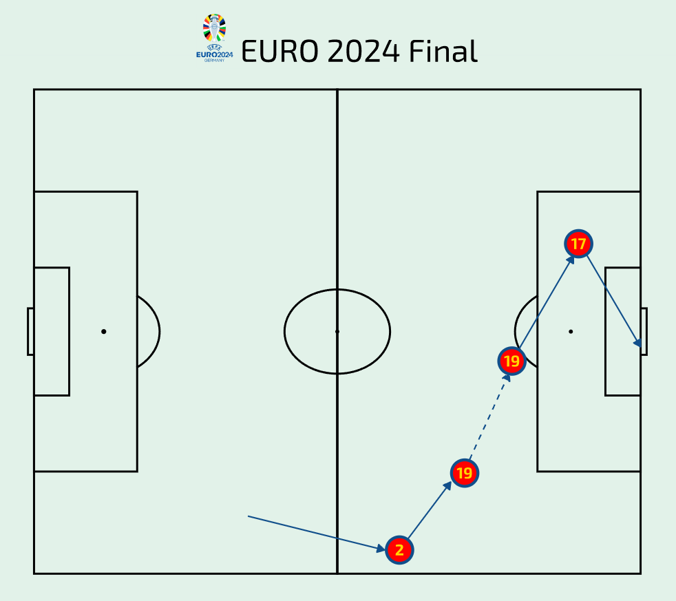
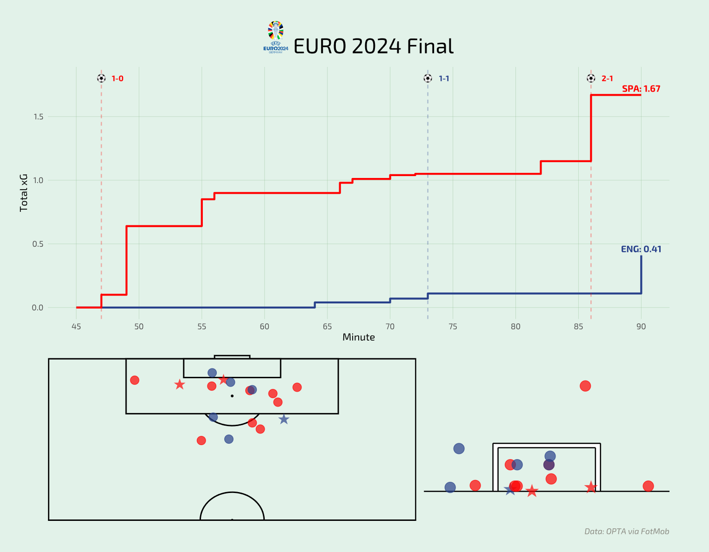
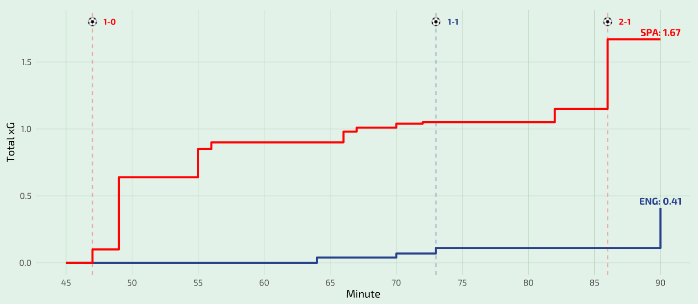
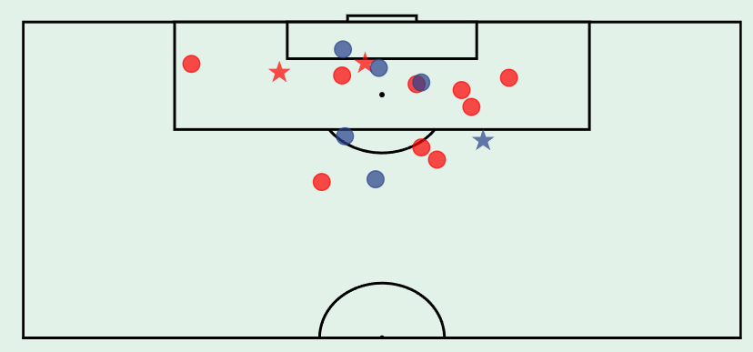
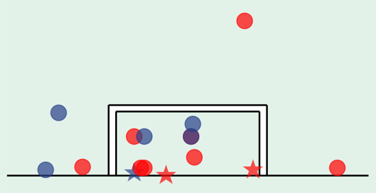

create_formations_plot <- function(data, highlighted_team = NULL, highlighted_position = NULL, hover_img = F){
data$tooltip <- c(data$player_name)
p <- create_simple_pitch(grass_colour = "#e2f2e9",
background_colour = "#e2f2e9",
line_colour = "black")
if(hover_img){
p <- p +
geom_image(data = data,
mapping = aes(x = 40, y = 90,
image = "images/hover_me.png"),
size = 0.5)
}
if(!is.null(highlighted_team) & !is.null(highlighted_position)){
hl_data <- data %>% filter(team_name == highlighted_team,
player_position == highlighted_position)
nhl_data <- bind_rows(data %>% filter(team_name == highlighted_team,
player_position != highlighted_position),
data %>% filter(team_name != highlighted_team))
}
else if(is.null(highlighted_team) & !is.null(highlighted_position)){
hl_data <- data %>% filter(player_position == highlighted_position)
nhl_data <- data %>% filter(player_position != highlighted_position)
}
else if(!is.null(highlighted_team) & is.null(highlighted_position)){
hl_data <- data %>% filter(team_name == highlighted_team)
nhl_data <- data %>% filter(team_name != highlighted_team)
}
[...]
}Graphs Code Explanation
In this section, we will explain the functions that have been implemented to create the graphs. All these functions are found in the file fct_viz.R.
Let’s start with the function create_formations_plot.

This function is used to draw a soccer pitch with the different players in formation.
As parameters, we need to pass the team data, the name of a team if we want to highlight it, the name of a position if we want to highlight the players in that position, and finally, whether we want to show a special image indicating that the graphs are interactive.
We create the tooltip content to add interactivity to the graph using ggiraph.
We draw the soccer pitch using the function create_simple_pitch.
We show the image hover_me.png if hover_img is TRUE.
In these lines, we choose which players to highlight and which not, depending on the received parameters.
If we have decided to highlight certain players, we highlight them using the alpha parameter.
We add a point for each player, colored according to their team.
And the number that the player wears on their shirt.
If we do not want to highlight anyone, we paint all players equally.
Now we add the flag and the name of each team on their side of the pitch.
Finally, we add the title to the graph using the function add_plot_title and convert it to ggiraph format.
create_formations_plot <- function(data, highlighted_team = NULL, highlighted_position = NULL, hover_img = F){
[...]
if(!is.null(highlighted_team) | !is.null(highlighted_position)){
p <- p +
geom_point_interactive(data = hl_data,
mapping = aes(x = x, y = y,
tooltip = tooltip, data_id = id,
color = team_name, fill = team_name
),
alpha = 1,
shape = 21,
size = 8,
stroke = 1.5) +
geom_text(data = hl_data,
mapping = aes(x = x, y = y,
label = player_number),
alpha = 1,
size = 4,
family = "Exo 2",
fontface = "bold",
color = ifelse(hl_data$team_name == "England", "#CD2626", "#FFD700")) +
geom_point_interactive(data = nhl_data,
mapping = aes(x = x, y = y,
tooltip = tooltip, data_id = id,
color = team_name, fill = team_name
),
alpha = 0.1,
shape = 21,
size = 8,
stroke = 1.5) +
geom_text(data = nhl_data,
mapping = aes(x = x, y = y,
label = player_number),
alpha = 0.1,
size = 4,
family = "Exo 2",
fontface = "bold",
color = ifelse(nhl_data$team_name == "England", "#CD2626", "#FFD700")) +
scale_color_manual_interactive(values = c("Spain" = "#104E8B", "England" = "#27408B")) +
scale_fill_manual_interactive(values = c("Spain" = "#FF0000", "England" = "#FFFFFF"))
}
[...]
}create_formations_plot <- function(data, highlighted_team = NULL, highlighted_position = NULL, hover_img = F){
[...]
else{
p <- p +
geom_point_interactive(data = data,
mapping = aes(x = x, y = y,
tooltip = tooltip, data_id = tooltip,
color = team_name, fill = team_name
),
shape = 21,
size = 8,
stroke = 1.5) +
geom_text(data = data,
mapping = aes(x = x, y = y,
label = player_number),
size = 4,
family = "Exo 2",
fontface = "bold",
color = ifelse(data$team_name == "England", "#CD2626", "#FFD700")) +
scale_color_manual_interactive(values = c("Spain" = "#104E8B", "England" = "#27408B")) +
scale_fill_manual_interactive(values = c("Spain" = "#FF0000", "England" = "#FFFFFF"))
}
[...]
}create_formations_plot <- function(data, highlighted_team = NULL, highlighted_position = NULL, hover_img = F){
[...]
p <- p +
geom_image(data = data,
mapping = aes(x = 5, y = 94,
image = "images/ESP.png"),
size = 0.07) +
geom_image(data = data,
mapping = aes(x = 95, y = 94,
image = "images/ENG.png"),
size = 0.07) +
geom_text(data = data,
mapping = aes(x = 18, y = 94,
label = "SPAIN"),
size = 7,
family = "Exo 2",
color = "#EE0000") +
geom_text(data = data,
mapping = aes(x = 78, y = 94,
label = "ENGLAND"),
size = 7,
family = "Exo 2",
color = "#27408B") +
guides(color = "none",
fill = "none")
g <- girafe(ggobj = add_plot_title(p, " EURO 2024 Final"),
width_svg = 7,
height_svg = 6,
options = list(
opts_toolbar(
hidden = c("lasso_select", "lasso_deselect", "zoom_onoff",
"zoom_rect", "zoom_reset", "saveaspng"
)
),
opts_sizing(rescale = F),
opts_tooltip(use_fill = T,
css = paste0("font-family: Exo 2; padding:3pt; color:#000080; border-radius:5px")
),
opts_hover(css = "stroke:black;stroke-width:3px;")
)
)
return(g)
}Now let’s look at the function create_goal_sequence_plot. With this function, we draw a soccer pitch again, on which we will represent the players and certain events of the match such as passes, shots, or movements.

We need to pass the event data to this function, and we also have the option to highlight areas of the pitch in rectangle format c(xmin, ymin, xmax, ymax).
We create the tooltip content to add interactivity to the graph using ggiraph.
We draw the soccer pitch using the function create_simple_pitch.
If a zone to highlight has been specified, we paint it.
The events of shots, passes, dribbles, and runs are represented with arrows that change shape and color according to the type of event and the team.
The players are represented on the pitch just like in the create_formation_plot function.
Finally, we add the title to the graph using the function add_plot_title and convert it to ggiraph format.
create_goal_sequence_plot <- function(data, rect_points = NULL){
data$tooltip <- c(data$player_name)
p <- create_simple_pitch(grass_colour = "#e2f2e9",
background_colour = "#e2f2e9",
line_colour = "black")
if(length(rect_points) == 4){
p <- p +
geom_rect(aes(xmin = rect_points[[1]], xmax = rect_points[[2]],
ymin = rect_points[[3]], ymax = rect_points[[4]]),
fill = "#FF0000",
alpha = 0.3)
}
[...]
}create_goal_sequence_plot <- function(data, rect_points = NULL){
[...]
p <- p +
geom_segment(data = data %>% filter(event_type %in% c("Pass", "Carry", "Shot")),
mapping = aes(x = x, y = y,
xend = x_end, yend = y_end),
color = ifelse((data %>% filter(event_type %in% c("Pass", "Carry", "Shot")))$team_name == "England", "#27408B", "#104E8B"),
linetype = ifelse((data %>% filter(event_type %in% c("Pass", "Carry", "Shot")))$event_type %in% c("Pass", "Shot"), 1, 2),
arrow = arrow(length = unit(0.2, "cm"), type = "closed")) +
geom_segment(data = data %>% filter(event_type == "LoseMarker"),
mapping = aes(x = x, y = y,
xend = x_end, yend = y_end),
color = ifelse((data %>% filter(event_type == "LoseMarker"))$team_name == "England", "#CD2626", "#FF0000"),
linetype = 3,
linewidth = 0.5,
arrow = arrow(length = unit(0.2, "cm"), type = "closed")) +
geom_point_interactive(data = data %>% filter(event_type == "PlayerPos"),
mapping = aes(x = x, y = y,
tooltip = tooltip, data_id = tooltip,
color = team_name, fill = team_name
),
shape = 21,
size = 8,
stroke = 1.5) +
geom_text(data = data %>% filter(event_type == "PlayerPos"),
mapping = aes(x = x, y = y,
label = player_number),
size = 4,
family = "Exo 2",
fontface = "bold",
color = ifelse((data %>% filter(event_type == "PlayerPos"))$team_name == "England", "#CD2626", "#FFD700")) +
scale_color_manual_interactive(values = c("Spain" = "#104E8B", "England" = "#27408B")) +
scale_fill_manual_interactive(values = c("Spain" = "#FF0000", "England" = "#FFFFFF")) +
guides(color = "none",
fill = "none")
g <- girafe(ggobj = add_plot_title(p, " EURO 2024 Final"),
width_svg = 7,
height_svg = 6,
options = list(
opts_toolbar(
hidden = c("lasso_select", "lasso_deselect", "zoom_onoff",
"zoom_rect", "zoom_reset", "saveaspng"
)
),
opts_sizing(rescale = F),
opts_tooltip(use_fill = T,
css = paste0("font-family: Exo 2; padding:3pt; color:#000080; border-radius:5px")
),
opts_hover(css = "stroke:black;stroke-width:3px;")
)
)
return(g)
}Lastly, let’s explain the shot dashboard. It is the most complex composition, as it consists of a set of multiple graphs using the patchwork package. It is very interesting to see how they all evolve together and how the interactivity is synchronized among all of them.

The code is divided into a function for each graph and a function that combines them all.
We start with the function that creates the xG evolution graph.

For this function, we only need to pass the shot event data as parameters.
We create the id and tooltip content to add interactivity to the graph using ggiraph.
We create the lines for each team of the total xG at each minute in a stepped type format.
We add a vertical line at the moment each goal, accompanied by an image of a small ball and the match score.
Next, we move on to the function that creates the shot map.

We pass the shot event data to this function and indicate if we want to highlight any (row number of the shot).
We create the id and tooltip content to add interactivity to the graph using ggiraph.
We adjust the coordinates of the shots (necessary because the data provider uses a different coordinate system).
We create the pitch, flip it, and limit it to view only half the pitch.
We add points from where the shots were taken. The shape changes depending on whether it is a goal, and the color according to the team. Additionally, we check if we only need to highlight a specific shot.
Now we go to the function to create the goalmouth map.

We pass the shot event data to this function and indicate if we want to highlight any (row number of the shot).
In these lines, we draw the goal and the pitch line, and delimit the graph.
We create the id and tooltip content to add interactivity to the graph using ggiraph.
Here, we also adjust the coordinates of the shots.
We add the points where the shots were directed. The shape changes depending on whether it is a goal, and the color according to the team. Additionally, we check if we only need to highlight a specific shot.
And we finish with the function that does the magic of combining and synchronizing everything.
This function needs the shot event data as parameters and indicates if we want to highlight any (row number of the shot).
First, we select the layout for the graphs.
We add the title with the function add_plot_title, create the graphs, and unite them using patchwork.
We convert it to ggiraph format. Remember that it is necessary for the data taken by the graphs to have the same data-id for the interactivity to be synchronized.
create_xg_evolution_plot <- function(data){
data$id <- rownames(data)
data$tooltip <- c(paste0(data$minute, "' ", data$player_name, "\n ",
"xG: ", data$xG))
p <- ggplot(data) +
geom_step(aes(minute, xG_accum, color = team_name),
linewidth = 1) +
geom_vline_interactive(data = data %>% filter(is_goal),
aes(xintercept = minute,
color = team_name,
tooltip = tooltip, data_id = id),
linetype = "dashed", alpha = 0.3, linewidth = 0.6) +
scale_color_manual(values = c("Spain" = "#FF0000", "England" = "#27408B")) +
geom_image(data = data %>%
filter(is_goal),
aes(x = minute, y = 1.8, image = "images/soccer-ball.png"),
asp = 3, size = .012) +
geom_text(data = data %>%
filter(is_goal),
mapping = aes(x = minute + 1.3, y = 1.8, label = result),
size = 3, family = "Exo 2", fontface = "bold",
color = ifelse((data %>% filter(is_goal))$team_name == "England", "#27408B", "#FF0000")) +
geom_text(data = tail(data, 2) %>% filter(team_name == "Spain"),
mapping = aes(x = minute, y = xG_accum + 0.05,label = paste0("SPA: ", xG_accum)),
size = 3.5, family = "Exo 2", fontface = "bold", color = "#FF0000") +
geom_text(data = tail(data, 2) %>% filter(team_name == "England"),
mapping = aes(x = minute, y = xG_accum + 0.05, label = paste0("ENG: ", xG_accum)),
size = 3.5, family = "Exo 2", fontface = "bold", color = "#27408B") +
labs(x = "Minute",
y = "Total xG") +
scale_x_continuous(limits = c(45, 90),breaks = seq(45, 90, 5)) +
ylim(0, 1.8) +
theme_minimal() +
theme(text = element_text(family = "Exo 2"),
plot.background = element_rect(color = "#e2f2e9", fill = "#e2f2e9"),
panel.background = element_rect(color = "#e2f2e9", fill = "#e2f2e9"),
panel.grid.major = element_line(color = "#8FBC8F",
linewidth = 0.1),
panel.grid.minor = element_blank()) +
guides(color = "none")
return(p)
}create_shotmap <- function(data, highlight = NULL){
data$id <- rownames(data)
data$tooltip <- c(paste0(data$minute, "' ", data$player_name, "\n ",
"xG: ", data$xG))
data <- data %>%
mutate(is_goal = ifelse(is_goal, "Goal", "No goal"),
x = x/1.05,
y = 100-(y/0.68)) %>%
filter(!is.na(xG))
p <- create_simple_pitch(grass_colour = "#e2f2e9",
background_colour = "#e2f2e9",
line_colour = "black")
p <- p +
coord_flip(xlim = c(52.2, 99.5), ylim = c(4.4, 95.6))
if(is.null(highlight)){
p <- p +
geom_point_interactive(data = data %>% filter(is_goal == "Goal"),
aes(x = x, y = y,
color = team_name, fill = team_name,
tooltip = tooltip, data_id = id),
size = 5, alpha = 0.7, shape = "\u2605") +
geom_point_interactive(data = data %>% filter(is_goal == "No goal"),
aes(x = x, y = y,
color = team_name, fill = team_name,
tooltip = tooltip, data_id = id),
size = 4, alpha = 0.7)
}
else{
p <- p +
geom_point_interactive(data = data[highlight,] %>%
filter(is_goal == "Goal"),
aes(x = x, y = y,
color = team_name, fill = team_name,
tooltip = tooltip, data_id = id),
size = 5, alpha = 0.9, shape = "\u2605") +
geom_point_interactive(data = data[highlight,] %>% filter(is_goal == "No goal"),
aes(x = x, y = y,
color = team_name, fill = team_name,
tooltip = tooltip, data_id = id),
size = 4, alpha = 0.9)
}
[...]
}create_goalmouth_map <- function(data, highlight = NULL){
p <- ggplot() +
annotate("rect", xmin = 54.8, xmax = 55.3, ymin = 0, ymax = 2.2, fill = "white") +
annotate("rect", xmin = 45.2, xmax = 44.7, ymin = 0, ymax = 2.2, fill = "white") +
annotate("rect", xmin = 44.7, xmax = 55.3, ymin = 2, ymax = 2.2, fill = "white") +
geom_segment(aes(x = -Inf, y = 0, xend = Inf, yend = 0), color = "black", linewidth = 0.6) +
geom_segment(aes(x = 55.3, y = 2.2, xend = 44.7, yend = 2.2), color = "black", linewidth = 0.6) +
geom_segment(aes(x = 54.8, y = 2, xend = 45.2, yend = 2), color = "black", linewidth = 0.6) +
geom_segment(aes(x = 55.3, y = 0, xend = 55.3, yend = 2.2), color = "black", linewidth = 0.6) +
geom_segment(aes(x = 54.8, y = 0, xend = 54.8, yend = 2), color = "black", linewidth = 0.6) +
geom_segment(aes(x = 45.2, y = 0, xend = 45.2, yend = 2), color = "black", linewidth = 0.6) +
geom_segment(aes(x = 44.7, y = 0, xend = 44.7, yend = 2.2), color = "black", linewidth = 0.6) +
scale_x_reverse() +
theme(plot.background = element_blank(),
panel.background = element_blank(),
panel.grid.major = element_blank(),
panel.grid.minor = element_blank(),
axis.ticks = element_blank(),
axis.text = element_blank(),
axis.title = element_blank()) +
xlim(61, 39) +
ylim(-1, 6)
[...]
}create_goalmouth_map <- function(data, highlight = NULL){
[...]
data$id <- rownames(data)
data$tooltip <- c(paste0(data$minute, "' ", data$player_name, "\n ",
"xGOT: ", data$xGOT))
data <- data %>%
mutate(is_goal = ifelse(is_goal, "Goal", "No goal"),
g_y = g_y/0.68,
g_z = g_z) %>%
filter(!is.na(xGOT))
if(is.null(highlight)){
p <- p +
geom_point_interactive(data = data %>% filter(is_goal == "Goal"),
aes(x = g_y, y = g_z,
color = team_name, fill = team_name,
tooltip = tooltip, data_id = id),
size = 6, alpha = 0.7, shape = "\u2605") +
geom_point_interactive(data = data %>% filter(is_goal == "No goal"),
aes(x = g_y, y = g_z,
color = team_name, fill = team_name,
tooltip = tooltip, data_id = id),
size = 5, alpha = 0.7)
}
else{
p <- p +
geom_point_interactive(data = data[highlight,] %>%
filter(is_goal == "Goal"),
aes(x = g_y, y = g_z,
color = team_name, fill = team_name,
tooltip = tooltip data_id = id),
size = 6, alpha = 0.9, shape = "\u2605") +
geom_point_interactive(data = data[highlight,] %>%
filter(is_goal == "No goal"),
aes(x = g_y, y = g_z,
color = team_name, fill = team_name,
tooltip = tooltip, data_id = id),
size = 5, alpha = 0.9)
}
[...]
}create_shot_dashboard <- function(data, highlight = NULL){
layout <- "AAAAA
BBBCC"
g <- girafe(ggobj = add_plot_title(create_xg_evolution_plot(data), " EURO 2024 Final", margin(0, 0, 10, 0)) /
create_shotmap(data, highlight) +
create_goalmouth_map(data, highlight) +
plot_layout(heights = c(1.5, 1), design = layout) &
plot_annotation(theme = theme(plot.background = element_rect(color = "#e2f2e9", fill = "#e2f2e9"),
panel.background = element_rect(color = "#e2f2e9", fill = "#e2f2e9"))),
width_svg = 10,
height_svg = 8,
options = list(
opts_toolbar(
hidden = c("lasso_select", "lasso_deselect", "zoom_onoff",
"zoom_rect", "zoom_reset", "saveaspng"
)
),
opts_sizing(rescale = F),
opts_tooltip(use_fill = T,
css = paste0("font-family: Exo 2; padding:3pt; color:#ffffff; border-radius:5px")
),
opts_hover(css = "stroke:black;stroke-width:1px;"),
opts_hover_inv(css = "opacity:0.2;")
)
)
return(g)
}